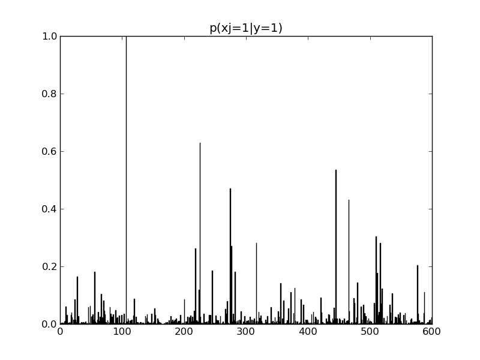
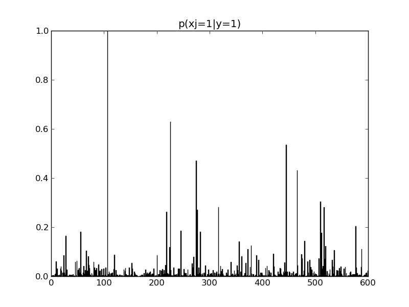

#!/usr/bin/env python
from sklearn.naive_bayes import MultinomialNB
from utils import load_mat
import numpy as np
import matplotlib.pylab as pl
data = load_mat('XwindowsDocData')
xtrain = data['xtrain']
ytrain = data['ytrain']
clf = MultinomialNB()
clf.fit(xtrain, ytrain.ravel())
counts = clf.feature_count_
y_counts = clf.class_count_
for i in range(len(counts)):
pl.figure()
pl.bar(np.arange(len(counts[i])), counts[i] / y_counts[i])
pl.title('p(xj=1|y=%d)' % (i + 1))
pl.savefig('naiveBayesBowDemo_%d.png' % i)
pl.show()
 
